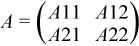
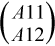
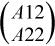

Intel® oneAPI Math Kernel Library Developer Reference - Fortran
Computes LU factorization using partial pivoting with row interchanges.
call sgetrf2 (m, n, a, lda, ipiv, info )
call dgetrf2 (m, n, a, lda, ipiv, info )
call cgetrf2 (m, n, a, lda, ipiv, info )
call zgetrf2 (m, n, a, lda, ipiv, info )
?getrf2 computes an LU factorization of a general m-by-n matrix A using partial pivoting with row interchanges.
The factorization has the form
A = P * L * U
where P is a permutation matrix, L is lower triangular with unit diagonal elements (lower trapezoidal if m > n), and U is upper triangular (upper trapezoidal if m < n).
This is the recursive version of the algorithm. It divides the matrix into four submatrices:

where A11 is n1 by n1 and A22 is n2 by n2 with n1 = min(m, n), and n2 = n - n1.
The subroutine calls itself to factor ,
do the swaps on , solve A12, update A22, then it calls itself to factor A22 and do the swaps on A21.
INTEGER. The number of rows of the matrix A. m >= 0.
INTEGER. The number of columns of the matrix A. n >= 0.
REAL for sgetrf2
DOUBLE PRECISION for dgetrf2
COMPLEX for cgetrf2
DOUBLE COMPLEX for zgetrf2
Array, size (lda,n).
On entry, the m-by-n matrix to be factored.
INTEGER. The leading dimension of the array a. lda >= max(1,m).
a |
On exit, the factors L and U from the factorization A = P * L * U; the unit diagonal elements of L are not stored. |
ipiv |
INTEGER. Array, size (min(m,n)). The pivot indices; for 1 <= i <= min(m,n), row i of the matrix was interchanged with row ipiv(i). |
info |
INTEGER. = 0: successful exit. < 0: if info = -i, the i-th argument had an illegal value. > 0: if info = i, Ui, i is exactly zero. The factorization has been completed, but the factor U is exactly singular, and division by zero will occur if it is used to solve a system of equations. |